Chapter 16 · Component-Based Software Engineering
Source review
The original source text, examples, tables and caveats remain available. Source slide numbers and textbook PDF pages are different references. Historical assertions stay attributed to this edition; this page is not a current legal, medical, regulatory or product guide. Classroom activities are labelled separately.
Required selections
- Composition types: original slides 40–43
- Interface semantics and OCL: original slides 51–55
Apply one named source concept to the chapter artifact and explain its effect. Finish any uncompleted core topic here; material does not become optional merely because it is reviewed after class. Assignment dates and marks remain in Blackboard.
Original source-slide ledger
Slide 1 · Chapter 16 - Component-based software engineering
Slide 2 · Topics covered
Topics covered Components and component models CBSE processes Component composition
Slide 3 · Component-based development
Component-based development Component-based software engineering (CBSE) is an approach to software development that relies on the reuse of entities called ‘software components’. It emerged from the failure of object-oriented development to support effective reuse. Single object classes are too detailed and specific. Components are more abstract than object classes and can be considered to be stand-alone service providers. They can exist as stand-alone entities.
Slide 4 · CBSE essentials
CBSE essentials Independent components specified by their interfaces. Component standards to facilitate component integration. Middleware that provides support for component inter-operability. A development process that is geared to reuse.
Slide 5 · CBSE and design principles
CBSE and design principles Apart from the benefits of reuse, CBSE is based on sound software engineering design principles: Components are independent so do not interfere with each other; Component implementations are hidden; Communication is through well-defined interfaces; One components can be replaced by another if its interface is maintained; Component infrastructures offer a range of standard services.
Slide 6 · Component standards
Component standards Standards need to be established so that components can communicate with each other and inter-operate. Unfortunately, several competing component standards were established: Sun’s Enterprise Java Beans Microsoft’s COM and .NET CORBA’s CCM In practice, these multiple standards have hindered the uptake of CBSE. It is impossible for components developed using different approaches to work together.
Slide 7 · Service-oriented software engineering
Service-oriented software engineering An executable service is a type of independent component. It has a ‘provides’ interface but not a ‘requires’ interface. From the outset, services have been based around standards so there are no problems in communicating between services offered by different vendors. System performance may be slower with services but this approach is replacing CBSE in many systems. Covered in Chapter 18
Slide 8 · Components and component models
Components and component models
Slide 9 · Components
Components Components provide a service without regard to where the component is executing or its programming language A component is an independent executable entity that can be made up of one or more executable objects; The component interface is published and all interactions are through the published interface;
Slide 10 · Component definitions
Component definitions Councill and Heinmann: A software component is a software element that conforms to a component model and can be independently deployed and composed without modification according to a composition standard. Szyperski: A software component is a unit of composition with contractually specified interfaces and explicit context dependencies only. A software component can be deployed independently and is subject to composition by third-parties.
Slide 11 · Component characteristics
Component characteristics
Slide 12 · Component characteristics
Component characteristics
Slide 13 · Component as a service provider
Component as a service provider The component is an independent, executable entity. It does not have to be compiled before it is used with other components. The services offered by a component are made available through an interface and all component interactions take place through that interface. The component interface is expressed in terms of parameterized operations and its internal state is never exposed.
Slide 14 · Component interfaces
Component interfaces Provides interface Defines the services that are provided by the component to other components. This interface, essentially, is the component API. It defines the methods that can be called by a user of the component. Requires interface Defines the services that specifies what services must be made available for the component to execute as specified. This does not compromise the independence or deployability of a component because the ‘requires’ interface does not define how these services should be provided.
Slide 15 · Component interfaces
Component interfaces Note UML notation. Ball and sockets can fit together.
Slide 16 · A model of a data collector component
A model of a data collector component
Slide 17 · Component access
Component access Components are accessed using remote procedure calls (RPCs). Each component has a unique identifier (usually a URL) and can be referenced from any networked computer. Therefore it can be called in a similar way as a procedure or method running on a local computer.
Slide 18 · Component models
Component models A component model is a definition of standards for component implementation, documentation and deployment. Examples of component models EJB model (Enterprise Java Beans) COM+ model (.NET model) Corba Component Model The component model specifies how interfaces should be defined and the elements that should be included in an interface definition.
Slide 19 · Basic elements of a component model
Basic elements of a component model
Slide 20 · Elements of a component model
Elements of a component model Interfaces Components are defined by specifying their interfaces. The component model specifies how the interfaces should be defined and the elements, such as operation names, parameters and exceptions, which should be included in the interface definition. Usage In order for components to be distributed and accessed remotely, they need to have a unique name or handle associated with them. This has to be globally unique. Deployment The component model includes a specification of how components should be packaged for deployment as independent, executable entities.
Slide 21 · Middleware support
Middleware support Component models are the basis for middleware that provides support for executing components. Component model implementations provide: Platform services that allow components written according to the model to communicate; Support services that are application-independent services used by different components. To use services provided by a model, components are deployed in a container. This is a set of interfaces used to access the service implementations.
Slide 22 · Middleware services defined in a component model
Middleware services defined in a component model
Slide 23 · CBSE processes
CBSE processes
Slide 24 · CBSE processes
CBSE processes CBSE processes are software processes that support component-based software engineering. They take into account the possibilities of reuse and the different process activities involved in developing and using reusable components. Development for reuse This process is concerned with developing components or services that will be reused in other applications. It usually involves generalizing existing components. Development with reuse This process is the process of developing new applications using existing components and services.
Slide 25 · CBSE processes
CBSE processes
Slide 26 · Supporting processes
Supporting processes Component acquisition is the process of acquiring components for reuse or development into a reusable component. It may involve accessing locally- developed components or services or finding these components from an external source. Component management is concerned with managing a company’s reusable components, ensuring that they are properly catalogued, stored and made available for reuse. Component certification is the process of checking a component and certifying that it meets its specification.
Slide 27 · CBSE for reuse
CBSE for reuse CBSE for reuse focuses on component development. Components developed for a specific application usually have to be generalised to make them reusable. A component is most likely to be reusable if it associated with a stable domain abstraction (business object). For example, in a hospital stable domain abstractions are associated with the fundamental purpose - nurses, patients, treatments, etc.
Slide 28 · Component development for reuse
Component development for reuse Components for reuse may be specially constructed by generalising existing components. Component reusability Should reflect stable domain abstractions; Should hide state representation; Should be as independent as possible; Should publish exceptions through the component interface. There is a trade-off between reusability and usability The more general the interface, the greater the reusability but it is then more complex and hence less usable.
Slide 29 · Changes for reusability
Changes for reusability Remove application-specific methods. Change names to make them general. Add methods to broaden coverage. Make exception handling consistent. Add a configuration interface for component adaptation. Integrate required components to reduce dependencies.
Slide 30 · Exception handling
Exception handling Components should not handle exceptions themselves, because each application will have its own requirements for exception handling. Rather, the component should define what exceptions can arise and should publish these as part of the interface. In practice, however, there are two problems with this: Publishing all exceptions leads to bloated interfaces that are harder to understand. This may put off potential users of the component. The operation of the component may depend on local exception handling, and changing this may have serious implications for the functionality of the component.
Slide 31 · Legacy system components
Legacy system components Existing legacy systems that fulfil a useful business function can be re-packaged as components for reuse. This involves writing a wrapper component that implements provides and requires interfaces then accesses the legacy system. Although costly, this can be much less expensive than rewriting the legacy system.
Slide 32 · Reusable components
Reusable components The development cost of reusable components may be higher than the cost of specific equivalents. This extra reusability enhancement cost should be an organization rather than a project cost. Generic components may be less space-efficient and may have longer execution times than their specific equivalents.
Slide 33 · Component management
Component management Component management involves deciding how to classify the component so that it can be discovered, making the component available either in a repository or as a service, maintaining information about the use of the component and keeping track of different component versions. A company with a reuse program may carry out some form of component certification before the component is made available for reuse. Certification means that someone apart from the developer checks the quality of the component.
Slide 34 · CBSE with reuse
CBSE with reuse CBSE with reuse process has to find and integrate reusable components. When reusing components, it is essential to make trade-offs between ideal requirements and the services actually provided by available components. This involves: Developing outline requirements; Searching for components then modifying requirements according to available functionality. Searching again to find if there are better components that meet the revised requirements. Composing components to create the system.
Slide 35 · CBSE with reuse
CBSE with reuse
Slide 36 · The component identification process
The component identification process
Slide 37 · Component identification issues
Component identification issues Trust. You need to be able to trust the supplier of a component. At best, an untrusted component may not operate as advertised; at worst, it can breach your security. Requirements. Different groups of components will satisfy different requirements. Validation. The component specification may not be detailed enough to allow comprehensive tests to be developed. Components may have unwanted functionality. How can you test this will not interfere with your application?
Slide 38 · Component validation
Component validation Component validation involves developing a set of test cases for a component (or, possibly, extending test cases supplied with that component) and developing a test harness to run component tests. The major problem with component validation is that the component specification may not be sufficiently detailed to allow you to develop a complete set of component tests. As well as testing that a component for reuse does what you require, you may also have to check that the component does not include any malicious code or functionality that you don’t need.
Slide 39 · Ariane launcher failure – validation failure?
Ariane launcher failure – validation failure? In 1996, the 1st test flight of the Ariane 5 rocket ended in disaster when the launcher went out of control 37 seconds after take off. The problem was due to a reused component from a previous version of the launcher (the Inertial Navigation System) that failed because assumptions made when that component was developed did not hold for Ariane 5. The functionality that failed in this component was not required in Ariane 5.
Slide 40 · Component composition
Component composition
Slide 41 · Component composition
Component composition The process of assembling components to create a system. Composition involves integrating components with each other and with the component infrastructure. Normally you have to write ‘glue code’ to integrate components.
Slide 42 · Types of composition
Types of composition Sequential composition (1) where the composed components are executed in sequence. This involves composing the provides interfaces of each component. Hierarchical composition (2) where one component calls on the services of another. The provides interface of one component is composed with the requires interface of another. Additive composition (3) where the interfaces of two components are put together to create a new component. Provides and requires interfaces of integrated component is a combination of interfaces of constituent components.
Slide 43 · Types of component composition
Types of component composition
Slide 44 · Glue code
Glue code Code that allows components to work together If A and B are composed sequentially, then glue code has to call A, collect its results then call B using these results, transforming them into the format required by B. Glue code may be used to resolve interface incompatibilities.
Slide 45 · Interface incompatibility
Interface incompatibility Parameter incompatibility where operations have the same name but are of different types. Operation incompatibility where the names of operations in the composed interfaces are different. Operation incompleteness where the provides interface of one component is a subset of the requires interface of another.
Slide 46 · Components with incompatible interfaces
Components with incompatible interfaces
Slide 47 · Adaptor components
Adaptor components Address the problem of component incompatibility by reconciling the interfaces of the components that are composed. Different types of adaptor are required depending on the type of composition. An addressFinder and a mapper component may be composed through an adaptor that strips the postal code from an address and passes this to the mapper component.
Slide 48 · Composition through an adaptor
Composition through an adaptor The component postCodeStripper is the adaptor that facilitates the sequential composition of addressFinder and mapper components.
Slide 49 · An adaptor linking a data collector and a sensor
An adaptor linking a data collector and a sensor
Slide 50 · Photo library composition
Photo library composition
Slide 51 · Interface semantics
Interface semantics You have to rely on component documentation to decide if interfaces that are syntactically compatible are actually compatible. Consider an interface for a PhotoLibrary component:
Slide 52 · Photo Library documentation
Photo Library documentation “This method adds a photograph to the library and associates the photograph identifier and catalogue descriptor with the photograph.” “what happens if the photograph identifier is already associated with a photograph in the library?” “is the photograph descriptor associated with the catalogue entry as well as the photograph i.e. if I delete the photograph, do I also delete the catalogue information?”
Slide 53 · The Object Constraint Language
The Object Constraint Language The Object Constraint Language (OCL) has been designed to define constraints that are associated with UML models. It is based around the notion of pre and post condition specification – common to many formal methods.
Slide 54 · The OCL description of the Photo Library interface
The OCL description of the Photo Library interface -- The context keyword names the component to which the conditions apply context addItem -- The preconditions specify what must be true before execution of addItem pre: PhotoLibrary.libSize() > 0 PhotoLibrary.retrieve(pid) = null -- The postconditions specify what is true after execution post:libSize () = libSize()@pre + 1 PhotoLibrary.retrieve(pid) = p PhotoLibrary.catEntry(pid) = photodesc context delete pre: PhotoLibrary.retrieve(pid) <> null ; post: PhotoLibrary.retrieve(pid) = null PhotoLibrary.catEntry(pid) = PhotoLibrary.catEntry(pid)@pre PhotoLibrary.libSize() = libSize()@pre—1
Slide 55 · Photo library conditions
Photo library conditions As specified, the OCL associated with the Photo Library component states that: There must not be a photograph in the library with the same identifier as the photograph to be entered; The library must exist - assume that creating a library adds a single item to it; Each new entry increases the size of the library by 1; If you retrieve using the same identifier then you get back the photo that you added; If you look up the catalogue using that identifier, then you get back the catalogue entry that you made.
Slide 56 · Composition trade-offs
Composition trade-offs When composing components, you may find conflicts between functional and non-functional requirements, and conflicts between the need for rapid delivery and system evolution. You need to make decisions such as: What composition of components is effective for delivering the functional requirements? What composition of components allows for future change? What will be the emergent properties of the composed system?
Slide 57 · Data collection and report generation components
Data collection and report generation components
Slide 58 · Key points
Key points CBSE is a reuse-based approach to defining and implementing loosely coupled components into systems. A component is a software unit whose functionality and dependencies are completely defined by its interfaces. Components may be implemented as executable elements included in a system or as external services. A component model defines a set of standards that component providers and composers should follow. The key CBSE processes are CBSE for reuse and CBSE with reuse.
Slide 59 · Key points
Key points During the CBSE process, the processes of requirements engineering and system design are interleaved. Component composition is the process of ‘wiring’ components together to create a system. When composing reusable components, you normally have to write adaptors to reconcile different component interfaces. When choosing compositions, you have to consider required functionality, non-functional requirements and system evolution.
Preserved original source illustrations
Select a figure to inspect it at its original size. The original PDF/PPTX retains its full layout and vector diagrams.
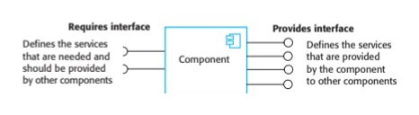
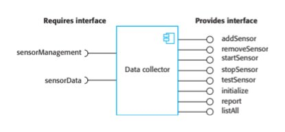
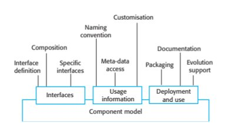
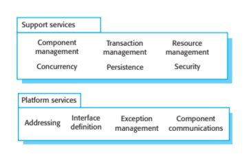
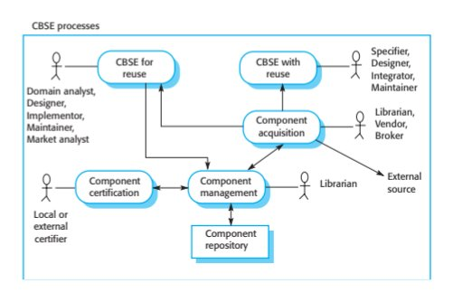
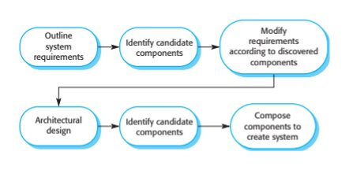
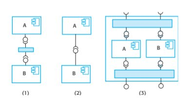
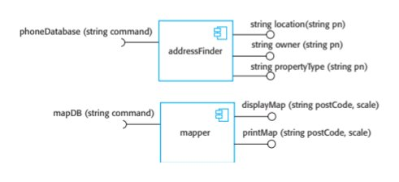
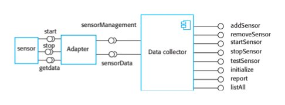
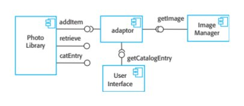
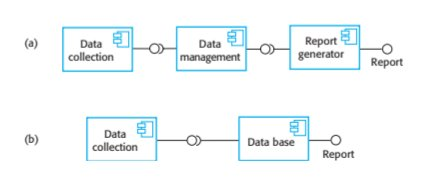
Supplied textbook chapter · complete text
The PDF remains authoritative for mathematical layout, figures and tables. Line wrapping and extraction artifacts may occur below; no textbook statement is replaced by a contemporary claim.
PDF page 1 · printed page 464
16
Component-based
software engineering
Objectives
The objective of this chapter is to describe an approach to software
reuse based on the composition of standardized, reusable
components. When you have read this chapter, you will:
■ understand what is meant by a software component that may be
included in a program as an executable element;
■ understand the key elements of software component models and
the support provided by middleware for these models;
■ be aware of the key activities in the component-based software
engineering (CBSE) process for reuse and the CBSE process with
reuse;
■ understand three different types of component composition and
some of the problems that have to be resolved when components
are composed to create new components or systems.
Contents
16.1 Components and component models
16.2 CBSE processes
16.3 Component compositionPDF page 2 · printed page 465
Chapter 16 ■ Component-based software engineering 465
Component-based software engineering (CBSE) emerged in the late 1990s as an
approach to software systems development based on reusing software components.
Its creation was motivated by frustration that object-oriented development had not
led to extensive reuse, as had been originally suggested. Single-object classes were
too detailed and specific and often had to be bound with an application at compile-
time. You had to have detailed knowledge of the classes to use them, which usually
meant that you had to have the component source code. Selling or distributing
objects as individual reusable components was therefore practically impossible.
Components are higher-level abstractions than objects and are defined by their
interfaces. They are usually larger than individual objects, and all implementation
details are hidden from other components. Component-based software engineering
is the process of defining, implementing, and integrating or composing these loosely
coupled, independent components into systems.
CBSE has become as an important software development approach for large-
scale enterprise systems, with demanding performance and security requirements.
Customers are demanding secure and dependable software that is delivered and
deployed more quickly. The only way that these demands can be met is to build soft-
ware by reusing existing components.
The essentials of component-based software engineering are:
1. Independent components that are completely specified by their interfaces. There
should be a clear separation between the component interface and its implemen-
tation. This means that one implementation of a component can be replaced by
another, without the need to change other parts of the system.
2. Component standards that define interfaces and so facilitate the integration of
components. These standards are embodied in a component model. They define, at
the very minimum, how component interfaces should be specified and how com-
ponents communicate. Some models go much further and define interfaces that
should be implemented by all conformant components. If components conform to
standards, then their operation is independent of their programming language.
Components written in different languages can be integrated into the same system.
3. Middleware that provides software support for component integration. To
make independent, distributed components work together, you need
middleware support that handles component communications. Middleware for
component support handles low-level issues efficiently and allows you to
focus on application-related problems. In addition, middleware for component
support may provide support for resource allocation, transaction management,
security, and concurrency.
4. A development process that is geared to component-based software engineer-
ing. You need a development process that allows requirements to evolve,
depending on the functionality of available components.
Component-based development embodies good software engineering practice. It
often makes sense to design a system using components, even if you have to developPDF page 3 · printed page 466
466 Chapter 16 ■ Component-based software engineering
Problems with CBSE
CBSE is now a mainstream approach to software engineering and is widely used when creating new systems.
However, when used as an approach to reuse, problems include component trustworthiness, component
certification, requirements compromises, and prediction of the properties of components, especially when they
are integrated with other components.
http://software-engineering-book.com/web/cbse-problems/
rather than reuse these components. Underlying CBSE are sound design principles
that support the construction of understandable and maintainable software:
1. Components are independent, so they do not interfere with each other’s opera-
tion. Implementation details are hidden. The component’s implementation can
be changed without affecting the rest of the system.
2. Components communicate through well-defined interfaces. If these interfaces
are maintained, one component can be replaced by another component provid-
ing additional or enhanced functionality.
3. Component infrastructures offer a range of standard services that can be used in
application systems. This reduces the amount of new code that has to be developed.
The initial motivation for CBSE was the need to support both reuse and distributed
software engineering. A component was seen as an element of a software system that
could be accessed, using a remote procedure call mechanism, by other components run-
ning on separate computers. Each system that reused a component had to incorporate its
own copy of that component. This idea of a component extended the notion of distrib-
uted objects, as defined in distributed systems models such as the CORBA specification
(Pope 1997). Several different protocols and technology-specific “standards” were
introduced to support this view of a component, including Sun’s Enterprise Java Beans
(EJB), Microsoft’s COM and .NET, and CORBA’s CCM (Lau and Wang 2007).
Unfortunately, the companies involved in proposing standards could not agree on
a single standard for components, thereby limiting the impact of this approach to soft-
ware reuse. It is impossible for components developed using different approaches to
work together. Components that are developed for different platforms, such as .NET
or J2EE, cannot interoperate. Furthermore, the standards and protocols proposed
were complex and difficult to understand. This was also a barrier to their adoption.
In response to these problems, the notion of a component as a service was devel-
oped, and standards were proposed to support service-oriented software engineering.
The most significant difference between a component as a service and the original
notion of a component is that services are stand-alone entities that are external to a
program using them. When you build a service-oriented system, you reference the
external service rather than including a copy of that service in your system.
Service-oriented software engineering is a type of component-based software engi-
neering. It uses a simpler notion of a component than that originally proposed in CBSE,PDF page 4 · printed page 467
16.1 ■ Components and component models 467
where components were executable routines that were included in larger systems. Each
system that used a component embedded its own version of that component. Service-
oriented approaches are gradually replacing CBSE with embedded components as an
approach to systems development. In this chapter, I discuss the use of CBSE with
embedded components; service-oriented software engineering is covered in Chapter 18.
16.1 Components and component models
The software reuse community generally agrees that a component is an independent
software unit that can be composed with other components to create a software system.
Beyond that, however, people have proposed varying definitions of a software compo-
nent. Councill and Heineman (Councill and Heineman 2001) define a component as:
A software element that conforms to a standard component model and can be
independently deployed and composed without modification according to a
composition standard.†
This definition is standards-based so that a software unit that conforms to these stand-
ards is a component. Szyperski (Szyperski 2002), however, does not mention standards in
his definition of a component but focuses instead on the key characteristics of components:
A software component is a unit of composition with contractually-specified
interfaces and explicit context dependencies only. A software component can
be deployed independently and is subject to composition by third parties.‡
Both of these definitions were developed around the idea of a component as an
element that is embedded in a system, rather than a service that is referenced by the
system. However, they are equally applicable to service components.
Szyperski also states that a component has no externally observable state; that is,
copies of components are indistinguishable. However, some component models,
such as the Enterprise Java Beans model, allow stateful components, so these do not
correspond with Szyperski’s definition. While stateless components are certainly
simpler to use, in some systems stateful components are more convenient and reduce
system complexity.
What the above definitions have in common is that they agree that components
are independent and that they are the fundamental unit of composition in a system. I
think that, if we combine these proposals, we get a more rounded description of a
reusable component. Figure 16.1 shows what I consider to be the essential character-
istics of a component as used in CBSE.
†Councill, W. T., and G. T. Heineman. 2001. “Definition of a Software Component and Its Elements.”
In Component-Based Software Engineering, edited by G T Heineman and W T Councill, 5–20. Boston:
Addison Wesley.
‡Szyperski, C. 2002. Component Software: Beyond Object-Oriented Programming, 2nd Ed. Harlow,
UK: Addison Wesley.PDF page 5 · printed page 468
468 Chapter 16 ■ Component-based software engineering
Component
characteristic Description
Composable For a component to be composable, all external interactions must take place through
publicly defined interfaces. In addition, it must provide external access to information
about itself, such as its methods and attributes.
Deployable To be deployable, a component has to be self-contained. It must be able to operate
as a stand-alone entity on a component platform that provides an implementation of
the component model. This usually means that the component is binary and does
not have to be compiled before it is deployed. If a component is implemented as a
service, it does not have to be deployed by a user of that component. Rather, it is
deployed by the service provider.
Documented Components have to be fully documented so that potential users can decide
whether or not the components meet their needs. The syntax and, ideally, the
semantics of all component interfaces should be specified.
Independent A component should be independent—it should be possible to compose and deploy
it without having to use other specific components. In situations where the
component needs externally provided services, these should be explicitly set out in a
“requires” interface specification.
Standardized Component standardization means that a component used in a CBSE process has to
conform to a standard component model. This model may define component
interfaces, component metadata, documentation, composition, and deployment.
Figure 16.1 Component
characteristics A useful way of thinking about a component is as a provider of one or more
services, even if the component is embedded rather than implemented as a service.
When a system needs something to be done, it calls on a component to provide that
service without caring about where that component is executing or the programming
language used to develop the component. For example, a component in a system
used in a public library might provide a search service that allows users to search the
library catalog. A component that converts from one graphical format to another
(e.g., TIFF to JPEG) provides a data conversion service and so on.
Viewing a component as a service provider emphasizes two critical characteris-
tics of a reusable component:
1. The component is an independent executable entity that is defined by its inter-
faces. You don’t need any knowledge of its source code to use it. It can either be
referenced as an external service or included directly in a program.
2. The services offered by a component are made available through an interface, and
all interactions are through that interface. The component interface is expressed
in terms of parameterized operations, and its internal state is never exposed.
In principle, all components have two related interfaces, as shown in Figure 16.2.
These interfaces reflect the services that the component provides and the services
that the component requires to operate correctly:
1. The “provides” interface defines the services provided by the component. This
interface is the component API. It defines the methods that can be called by a userPDF page 6 · printed page 469
16.1 ■ Components and component models 469
Requires interface Provides interface
Defines the services Defines the services
that are needed and Component that are provided
should be provided by the component
Figure 16.2 Component by other components to other components
interfaces
of the component. In a UML component diagram, the “provides” interface for a
component is indicated by a circle at the end of a line from the component icon.
2. The “requires” interface specifies the services that other components in the system
must provide if a component is to operate correctly. If these services are not availa-
ble, then the component will not work. This does not compromise the independence
or deployability of a component because the “requires” interface does not define
how these services should be provided. In the UML, the symbol for a “requires”
interface is a semicircle at the end of a line from the component icon. Notice that
“provides” and “requires” interface icons can fit together like a ball and socket.
To illustrate these interfaces, Figure 16.3 shows a model of a component that has
been designed to collect and collate information from an array of sensors. It runs
autonomously to collect data over a period of time and, on request, provides collated
data to a calling component. The “provides” interface includes methods to add,
remove, start, stop, and test sensors. The report method returns the sensor data that
has been collected, and the listAll method provides information about the attached
sensors. Although I have not shown them here, these methods have associated
parameters specifying the sensor identifiers, locations, and so on.
The “requires” interface is used to connect the component to the sensors. It
assumes that sensors have a data interface, accessed through sensorData, and a man-
agement interface, accessed through sensorManagement. This interface has been
designed to connect to different types of sensors so that it does not include specific
sensor operations such as Test and provideReading. Instead, the commands used by a
specific type of sensor are embedded in a string, which is a parameter to the opera-
tions in the “requires” interface. Adaptor components parse this parameter string and
translate the embedded commands into the specific control interface of each type of
sensor. I discuss the use of adaptors later in this chapter, where I show how the data
collector component may be connected to a sensor (Figure 16.12).
Requires interface Provides interface
addSensor
removeSensor sensorManagement
startSensor
Data collector stopSensor
sensorData testSensor
initialize
Figure 16.3 A model
reportof a data collector
component listAllPDF page 7 · printed page 470
470 Chapter 16 ■ Component-based software engineering
Components and objects
Components are often implemented in object-oriented languages, and, in some cases, accessing the “provides”
interface of a component is done through method calls. However, components and object classes are not the
same thing. Unlike object classes, components are independently deployable, do not define types, are language-
independent, and are based on a standard component model.
http://software-engineering-book.com/web/components-and-objects/
Components are accessed using remote procedure calls (RPCs). Each component
has a unique identifier and, using this name, may be called from another computer.
The called component uses the same mechanism to access the “required” compo-
nents that are defined in its interface.
An important difference between a component as an external service and a com-
ponent as a program element accessed using a remote procedure call is that services
are completely independent entities. They do not have an explicit “requires” inter-
face. Of course, they do require other components to support their operation, but
these are provided internally. Other programs can use services without the need to
implement any additional support required by the service.
16.1.1 Component models
A component model is a definition of standards for component implementation, doc-
umentation, and deployment. These standards are for component developers to
ensure that components can interoperate. They are also for providers of component
execution infrastructures who provide middleware to support component operation.
For service components, the most important component model is the Web Service
models, and for embedded components, widely used models include the Enterprise
Java Beans (EJB) model and Microsoft’s .NET model (Lau and Wang 2007).
The basic elements of an ideal component model are discussed by Weinreich and
Sametinger (Weinreich and Sametinger 2001). I summarize these model elements in
Figure 16.4. This diagram shows that the elements of a component model define the
component interfaces, the information that you need to use the component in a pro-
gram, and how a component should be deployed:
1. Interfaces Components are defined by specifying their interfaces. The compo-
nent model specifies how the interfaces should be defined and the elements,
such as operation names, parameters, and exceptions, which should be included
in the interface definition. The model should also specify the language used to
define the component interfaces.
For web services, interface specification uses XML-based languages as
discussed in Chapter 18; EJB is Java-specific, so Java is used as the interface
definition language; in .NET, interfaces are defined using Microsoft’s CommonPDF page 8 · printed page 471
16.1 ■ Components and component models 471
Customization
Naming
convention
Composition Documentation
Interface Specific Meta-data Packaging Evolution
definition interfaces access support
Usage Deployment Interfaces
information and use
Figure 16.4 Basic
elements of a Component model
component model
Intermediate Language (CIL). Some component models require specific inter-
faces that must be defined by a component. These are used to compose the com-
ponent with the component model infrastructure, which provides standardized
services such as security and transaction management.
2. Usage In order for components to be distributed and accessed remotely via
RPCs, they need to have a unique name or handle associated with them. This
has to be globally unique. For example, in EJB, a hierarchical name is generated
with the root based on an Internet domain name. Services have a unique URI
(Uniform Resource Identifier).
Component meta-data is data about the component itself, such as information
about its interfaces and attributes. The meta-data is important because it allows
users of the component to find out what services are provided and required.
Component model implementations normally include specific ways (such as the
use of a reflection interface in Java) to access this component meta-data.
Components are generic entities, and, when deployed, they have to be config-
ured to fit into an application system. For example, you could configure the
Data collector component (Figure 16.3) by defining the maximum number of
sensors in a sensor array. The component model may therefore specify how the
binary components can be customized for a particular deployment environment.
3. Deployment The component model includes a specification of how components
should be packaged for deployment as independent, executable routines.
Because components are independent entities, they have to be packaged with all
supporting software that is not provided by the component infrastructure, or is
not defined in a “requires” interface. Deployment information includes informa-
tion about the contents of a package and its binary organization.
Inevitably, as new requirements emerge, components will have to be changed or
replaced. The component model may therefore include rules governing when
and how component replacement is allowed. Finally, the component model may
define the component documentation that should be produced. This is used to
find the component and to decide whether it is appropriate.PDF page 9 · printed page 472
472 Chapter 16 ■ Component-based software engineering
Support services
Component Transaction Resource
management management management
Concurrency Persistence Security
Platform services
Interface Exception Component
Figure 16.5 Middleware Addressing definition management communications
services defined in a
component model
For components that are executable routines rather than external services, the
component model defines the services to be provided by the middleware that
supports the executing components. Weinreich and Sametinger use the analogy of an
operating system to explain component models. An operating system provides a set
of generic services that can be used by applications. A component model implemen-
tation provides comparable shared services for components. Figure 16.5 shows some
of the services that may be provided by an implementation of a component model.
The services provided by a component model implementation fall into two
categories:
1. Platform services, which enable components to communicate and interoperate
in a distributed environment. These are the fundamental services that must be
available in all component-based systems.
2. Support services, which are common services that many different components
are likely to require. For example, many components require authentication to
ensure that the user of component services is authorized. It makes sense to
provide a standard set of middleware services for use by all components. This
reduces the costs of component development, and potential component incom-
patibilities can be avoided.
Middleware implements the common component services and provides interfaces to
them. To make use of the services provided by a component model infrastructure, you
can think of the components as being deployed in a “container.” A container is an imple-
mentation of the support services plus a definition of the interfaces that a component
must provide to integrate it with the container. Conceptually, when you add a com
ponent to the container, the component can access the support services and the container
can access the component interfaces. When in use, the component interfaces themselves
are not accessed directly by other components. They are accessed through a container
interface that invokes code to access the interface of the embedded component.
Containers are large and complex and, when you deploy a component in a con-
tainer, you get access to all middleware services. However, simple components mayPDF page 10 · printed page 473
16.2 ■ CBSE processes 473
not need all of the facilities offered by the supporting middleware. The approach
taken in web services to common service provision is therefore rather different. For
web services, standards have been defined for common services such as transaction
management and security, and these standards have been implemented as program
libraries. If you are implementing a service component, you only use the common
services that you need.
The services associated with a component model have much in common with
the facilities provided by object-oriented frameworks, which I discussed in
Chapter 15. Although the services provided may not be as comprehensive, frame-
work services are often more efficient than container-based services. As a conse-
quence, some people think that it is best to use frameworks such as SPRING
(Wheeler and White 2013) for Java development rather than the fully-featured
component model in EJB.
16.2 CBSE processes
CBSE processes are software processes that support component-based software
engineering. They take into account the possibilities of reuse and the different pro-
cess activities involved in developing and using reusable components. Figure 16.6
(Kotonya 2003) presents an overview of the processes in CBSE. At the highest level,
there are two types of CBSE processes:
1. Development for reuse This process is concerned with developing components
or services that will be reused in other applications. It usually involves general-
izing existing components.
2. Development with reuse This process is the process of developing new applica-
tions using existing components and services.
These processes have different objectives and therefore include different activi-
ties. In the development for reuse process, the objective is to produce one or more
reusable components. You know the components that you will be working with, and
you have access to their source code to generalize them. In development with reuse,
you don’t know what components are available, so you need to discover these com-
ponents and design your system to make the most effective use of them. You may
not have access to the component source code.
You can see from Figure 16.6 that the basic processes of CBSE with and for reuse
have supporting processes that are concerned with component acquisition, compo-
nent management, and component certification:
1. Component acquisition is the process of acquiring components for reuse or devel-
opment into a reusable component. It may involve accessing locally developed
components or services or finding these components from an external source.PDF page 11 · printed page 474
474 Chapter 16 ■ Component-based software engineering
CBSE processes
Specifier,
CBSE for CBSE with Designer,
reuse reuse Integrator,
Domain analyst, Maintainer
Designer,
Implementor, Librarian,
Component Vendor, Maintainer,
acquisition Broker Market analyst
External Component Component Librarian source certification management
Local or
external
Component certifier
repository
Figure 16.6 CBSE
processes
2. Component management is concerned with managing a company’s reusable
components, ensuring that they are properly catalogued, stored, and made avail-
able for reuse.
3. Component certification is the process of checking a component and certifying
that it meets its specification.
Components maintained by an organization may be stored in a component repos-
itory that includes both the components and information about their use.
16.2.1 CBSE for reuse
CBSE for reuse is the process of developing reusable components and making them
available for reuse through a component management system. The vision of early
supporters of CBSE (Szyperski 2002) was that a thriving component marketplace
would develop. There would be specialist component providers and component ven-
dors who would organize the sale of components from different developers. Software
developers would buy components to include in a system or pay for services as they
were used. However, this vision has not been realized. There are relatively few com-
ponent suppliers, and buying off-the-shelf components is uncommon.
Consequently, CBSE for reuse is mostly used within organizations that have
made a commitment to reuse-driven software engineering. These companies have a
base of internally developed components that can be reused. However, these inter-
nally developed components may not be reusable without change. They often include
application-specific features and interfaces that are unlikely to be required in other
programs where the component is reused.PDF page 12 · printed page 475
16.2 ■ CBSE processes 475
To make components reusable, you have to adapt and extend the application-
specific components to create more generic and therefore more reusable versions.
Obviously, this adaptation has an associated cost. You have to decide first, whether
a component is likely to be reused and second, whether the cost savings from future
reuse justify the costs of making the component reusable.
To answer the first of these questions, you have to decide whether or not the com-
ponent implements one or more stable domain abstractions. Stable domain abstrac-
tions are fundamental elements of the application domain that change slowly. For
example, in a banking system, domain abstractions might include accounts, account
holders, and statements. In a hospital management system, domain abstractions might
include patients, treatments, and nurses. These domain abstractions are sometimes
called business objects. If the component is an implementation of a commonly used
domain abstraction or group of related business objects, it can probably be reused.
To answer the question about cost-effectiveness, you have to assess the costs of
changes that are required to make the component reusable. These costs are the costs of
component documentation and component validation, and of making the component more
generic. Changes that you may make to a component to make it more reusable include:
■ removing application-specific methods;
■ changing names to make them more general;
■ adding methods to provide more complete functional coverage;
■ making exception handling consistent for all methods;
■ adding a “configuration” interface to allow the component to be adapted to
different situations of use;
■ integrating required components to increase independence.
The problem of exception handling is a difficult one. In principle, components
should not handle exceptions themselves because each application will have its own
requirements for exception management. Rather, the component should define what
exceptions can arise and should publish these exceptions as part of the interface. For
example, a simple component implementing a stack data structure should detect and
publish stack overflow and stack underflow exceptions. In practice, however, there
are two problems with this process:
1. Publishing all exceptions leads to bloated interfaces that are harder to under-
stand. This may put off potential users of the component.
2. The operation of the component may depend on local exception handling, and
changing this may have serious implications for the functionality of the component.
You therefore have to take a pragmatic approach to component exception handling.
Common technical exceptions, where recovery is important for the functioning of the
component, should be handled locally. These exceptions and how they are handledPDF page 13 · printed page 476
476 Chapter 16 ■ Component-based software engineering
should be documented with the component. Other exceptions that are related to the busi-
ness function of the component should be passed to the calling component for handling.
Mili et al. (Mili et al. 2002) discuss ways of estimating the costs of making a compo-
nent reusable and the returns from that investment. The benefits of reusing rather than
redeveloping a component are not simply productivity gains. There are also quality gains,
because a reused component should be more dependable, and time-to-market gains.
These are the increased returns that accrue from deploying the software more quickly.
Mili et al. present various formulas for estimating these gains, as does the COCOMO
model, discussed in Chapter 23. However, the parameters of these formulas are diffi-
cult to estimate accurately, and the formulas must be adapted to local circumstances,
making them difficult to use. I suspect that few software project managers use these
models to estimate the return on investment from component reusability.
Whether or not a component is reusable depends on its application domain,
functionality, and generality. If the domain is a general one and the component
implements standard functionality in that domain, then it is more likely to be reusa-
ble. As you add generality to a component, you increase its reusability because it can
be applied in a wider range of environments. Unfortunately, this normally means
that the component has more operations and is more complex, which makes the
component harder to understand and use.
There is, therefore, a trade-off between the reusability and understandability of a
component. To make a component reusable you have to provide a set of generic
interfaces with operations that cater to all of the ways in which the component could
be used. Reusability adds complexity and hence reduces component understandabil-
ity. This makes it more difficult and time consuming to decide whether a component
is suitable for reuse. Because of the time involved in understanding a reusable com-
ponent, it is sometimes more cost-effective to reimplement a simpler component
with the specific functionality that is required.
A potential source of components is legacy systems. As I discussed in Chapter 9,
legacy systems are systems that fulfill an important business function but are written
using obsolete software technologies. As a result, it may be difficult to use them with
new systems. However, if you convert these old systems to components, their func-
tionality can be reused in new applications.
Of course, these legacy systems do not normally have clearly defined “requires” and
“provides” interfaces. To make these components reusable, you have to create a wrapper
that defines the component interfaces. The wrapper hides the complexity of the underly-
ing code and provides an interface for external components to access services that are
provided. Although this wrapper is a fairly complex piece of software, the cost of wrapper
development may be significantly less than the cost of reimplementing the legacy system.
Once you have developed and tested a reusable component or service, it then has
to be managed for future reuse. Management involves deciding how to classify the
component so that it can be discovered, making the component available either in a
repository or as a service, maintaining information about the use of the component,
and keeping track of different component versions. If the component is open-source,
you may make it available in a public repository such as GitHub or Sourceforge. If it
is intended for use in a company, then you may use an internal repository system.PDF page 14 · printed page 477
16.2 ■ CBSE processes 477
Modify
Outline
Identify candidate requirements system
components according to discovered requirements
components
Compose
Architectural Identify candidate components to
design componentsFigure 16.7 CBSE with create system
reuse
A company with a reuse program may carry out some form of component certifi-
cation before the component is made available for reuse. Certification means that
someone apart from the developer checks the quality of the component. They test the
component and certify that it has reached an acceptable quality standard, before it is
made available for reuse. However, this process can be expensive, and so many
companies simply leave testing and quality checking to the component developers.
16.2.2 CBSE with reuse
The successful reuse of components requires a development process tailored to
including reusable components in the software being developed. The CBSE with
reuse process has to include activities that find and integrate reusable components.
The structure of such a process was discussed in Chapter 2, and Figure 16.7 shows
the principal activities within that process. Some of these activities, such as the
initial discovery of user requirements, are carried out in the same way as in other
software processes. However, the essential differences between CBSE with reuse
and software processes for original software development are as follows:
1. The user requirements are initially developed in outline rather than in detail, and
stakeholders are encouraged to be as flexible as possible in defining their
requirements. Requirements that are too specific limit the number of compo-
nents that could meet these requirements. However, unlike incremental devel-
opment, you need a complete description of the requirements so that you can
identify as many components as possible for reuse.
2. Requirements are refined and modified early in the process depending on the
components available. If the user requirements cannot be satisfied from available
components, you should discuss the related requirements that can be supported
by the reusable components. Users may be willing to change their minds if this
means cheaper or quicker system delivery.
3. There is a further component search and design refinement activity after the sys-
tem architecture has been designed. Apparently, usable components may turn outPDF page 15 · printed page 478
478 Chapter 16 ■ Component-based software engineering
Component Component ComponentFigure 16.8 The
search selection validationcomponent
identification process
to be unsuitable or may not work properly with other chosen components. You
may have to find alternatives to these components. Further requirements changes
may therefore be necessary, depending on the functionality of these components.
4. Development is a composition process where the discovered components are
integrated. This involves integrating the components with the component model
infrastructure and, often, developing adaptors that reconcile the interfaces of
incompatible components. Of course, additional functionality may also be
required over and above that provided by reused components.
The architectural design stage is particularly important. Jacobsen et al. (Jacobsen,
Griss, and Jonsson 1997) found that defining a robust architecture is critical for suc-
cessful reuse. During the architectural design activity, you may choose a component
model and implementation platform. However, many companies have a standard
development platform (e.g., .NET), so the component model is predetermined. As I
discussed in Chapter 6, you also establish the high-level architecture of the system at
this stage and make decisions about system distribution and control.
An activity that is unique to the CBSE process is identifying candidate compo-
nents or services for reuse. This involves a number of subactivities, as shown in
Figure 16.8. Initially, your focus should be on search and selection. You need to
convince yourself that components are available to meet your requirements.
Obviously, you should do some initial checking that the component is suitable, but
detailed testing may not be required. In the later stage, after the system architecture
has been designed, you should spend more time on component validation. You need
to be confident that the identified components are really suited to your application; if
not, then you have to repeat the search and selection processes.
The first step in identifying components is to look for components that are available
within your company or from trusted suppliers. There are few component vendors, so
you are most likely to be looking for components that have been developed in your own
organization or in the repositories of open-source software that are available. Software
development companies can build their own database of reusable components without
the risks inherent in using components from external suppliers. Alternatively, you may
decide to search code libraries available on the web, such as Sourceforge, GitHub, or
Google Code, to see if source code for the component that you need is available.
Once the component search process has identified possible components, you have to
select candidate components for assessment. In some cases, this will be a straightforward
task. Components on the list will directly implement the user requirements, and there will
not be competing components that match these requirements. In other cases, however,
the selection process is more complex. There will not be a clear mapping of requirements
onto components. You may find that several components have to be integrated to meet aPDF page 16 · printed page 479
16.2 ■ CBSE processes 479
The Ariane 5 launcher failure
While developing the Ariane 5 space launcher, the designers decided to reuse the inertial reference software
that had performed successfully in the Ariane 4 launcher. The inertial reference software maintains the stability
of the rocket. The designers decided to reuse this without change (as you would do with components),
although it included additional functionality that was not required in Ariane 5.
In the first launch of Ariane 5, the inertial navigation software failed, and the rocket could not be controlled.
The rocket and its payload were destroyed. The cause of the problem was an unhandled exception when a con-
version of a fixed-point number to an integer resulted in a numeric overflow. This caused the runtime system to
shut down the inertial reference system, and launcher stability could not be maintained. The fault had never
occurred in Ariane 4 because it had less powerful engines and the value that was converted could not be large
enough for the conversion to overflow.
This illustrates an important problem with software reuse. Software may be based on assumptions about the
context where the system will be used, and these assumptions may not be valid in a different situation.
More information about this failure is available at: http://software-engineering-book.com/case-studies/ariane5/
Figure 16.9 An specific requirement or group of requirements. You therefore have to decide which of
example of validation these component compositions provide the best coverage of the requirements.
failure with reused
Once you have selected components for possible inclusion in a system, you shouldsoftware
then validate them to check that they behave as advertised. The extent of the validation
required depends on the source of the components. If you are using a component that
has been developed by a known and trusted source, you may decide that component
testing is unnecessary. You simply test the component when it is integrated with other
components. On the other hand, if you are using a component from an unknown source,
you should always check and test that component before including it in your system.
Component validation involves developing a set of test cases for a component
(or, possibly, extending test cases supplied with that component) and developing a
test harness to run component tests. The major problem with component validation
is that the component specification may not be sufficiently detailed to allow you to
develop a complete set of component tests. Components are usually specified infor-
mally, with the only formal documentation being their interface specification. This
may not include enough information for you to develop a complete set of tests that
would convince you that the component’s advertised interface is what you require.
As well as testing that a component for reuse does what you require, you may also
have to check that the component does not include malicious code or functionality
that you don’t need. Professional developers rarely use components from untrusted
sources, especially if these sources do not provide source code. Therefore, the mali-
cious code problem does not usually arise. However, reused components may often
contain functionality that you don’t need, and you have to check that this functional-
ity will not interfere with your use of the component.
The problem with unnecessary functionality is that it may be activated by the
component itself. While this may have no effect on the application reusing the com-
ponent, it can slow down the component, cause it to produce surprising results or, in
exceptional cases, cause serious system failures. Figure 16.9 summarizes a situation
where the failure of a reused software system, which had unnecessary functionality,
led to catastrophic system failure.PDF page 17 · printed page 480
480 Chapter 16 ■ Component-based software engineering
The problem in the Ariane 5 launcher arose because the assumptions made about
the software for Ariane 4 were invalid for Ariane 5. This is a general problem with
reusable components. They are originally implemented for a specific application
environment and, naturally, embed assumptions about that environment. These
assumptions are rarely documented, so when the component is reused, it is impossi-
ble to develop tests to check if the assumptions are still valid. If you are reusing a
component in a new environment, you may not discover the embedded environmen-
tal assumptions until you use the component in an operational system.
16.3 Component composition
Component composition is the process of integrating components with each other,
and with specially written “glue code” to create a system or another component. You
can compose components in several different ways, as shown in Figure 16.10. From
left to right these diagrams illustrate sequential composition, hierarchical composi-
tion, and additive composition. In the discussion below, I assume that you are com-
posing two components (A and B) to create a new component:
1. Sequential composition In a sequential composition, you create a new compo-
nent from two existing components by calling the existing components in
sequence. You can think of the composition as a composition of the “provides
interfaces.” That is, the services offered by component A are called, and the
results returned by A are then used in the call to the services offered by compo-
nent B. The components do not call each other in sequential composition but are
called by the external application. This type of composition may be used with
embedded or service components.
Some extra glue code may be required to call the component services in the right
order and to ensure that the results delivered by component A are compatible
with the inputs expected by component B. The “glue code” transforms these
outputs to be of the form expected by component B.
2. Hierarchical composition This type of composition occurs when one component
calls directly on the services provided by another component. That is, component
A calls component B. The called component provides the services that are required
by the calling component. Therefore, the “provides” interface of the called com-
ponent must be compatible with the “requires” interface of the calling component.
Component A calls on component B directly, and, if their interfaces match,
there may be no need for additional code. However, if there is a mismatch
between the “requires” interface of A and the “provides” interface of B, then
some conversion code may be required. As services do not have a “requires”
interface, this mode of composition is not used when components are imple-
mented as services accessed over the web.PDF page 18 · printed page 481
16.3 ■ Component composition 481
A A
A B
B B
Figure 16.10 Types of
component composition (1) (2) (3)
3. Additive composition This occurs when two or more components are put together
(added) to create a new component, which combines their functionality. The “pro-
vides” interface and “requires” interface of the new component are a combination
of the corresponding interfaces in components A and B. The components are
called separately through the external interface of the composed component and
may be called in any order. A and B are not dependent and do not call each other.
This type of composition may be used with embedded or service components.
You might use all the forms of component composition when creating a system.
In all cases, you may have to write “glue code” that links the components. For exam-
ple, for sequential composition, the output of component A typically becomes the
input to component B. You need intermediate statements that call component A,
collect the result, and then call component B, with that result as a parameter. When
one component calls another, you may need to introduce an intermediate component
that ensures that the “provides” interface and the “requires” interface are compatible.
When you write new components especially for composition, you should design the
interfaces of these components so that they are compatible with other components in
the system. You can therefore easily compose these components into a single unit.
However, when components are developed independently for reuse, you will often be
faced with interface incompatibilities. This means that the interfaces of the components
that you wish to compose are not the same. Three types of incompatibility can occur:
1. Parameter incompatibility The operations on each side of the interface have the
same name, but their parameter types or the number of parameters are different. In
Figure 16.11, the location parameter returned by addressFinder is incompatible
with the parameters required by the displayMap and printMap methods in mapDB.
2. Operation incompatibility The names of the operations in the provides and
“requires” interfaces are different. This is a further incompatibility between the
components shown in Figure 16.11.
3. Operation incompleteness The “provides” interface of a component is a subset
of the “requires” interface of another component, or vice versa.PDF page 19 · printed page 482
482 Chapter 16 ■ Component-based software engineering
string location (string pn)
phoneDatabase (string command)
string owner (string pn)
addressFinder
string propertyType (string pn)
displayMap (string postCode, scale)
mapDB (string command)
mapper printMap (string postCode, scale)
Figure 16.11
Components with
incompatible interfaces
In all cases, you tackle the problem of incompatibility by writing an adaptor that
reconciles the interfaces of the two components being reused. An adaptor compo-
nent converts one interface to another.
The precise form of the adaptor depends on the type of composition. Sometimes, as
in the next example, the adaptor takes a result from one component and converts it into
a form where it can be used as an input to another. In other cases, the adaptor may be
called by component A as a proxy for component B. This situation occurs if A wishes
to call B, but the details of the “requires” interface of A do not match the details of the
“provides” interface of B. The adaptor reconciles these differences by converting its
input parameters from A into the required input parameters for B. It then calls B to
deliver the services required by A.
To illustrate adaptors, consider the two simple components shown in Figure 16.11,
whose interfaces are incompatible. These might be part of a system used by the emer-
gency services. When the emergency operator takes a call, the phone number is input
to the addressFinder component to locate the address. Then, using the mapper compo-
nent, the operator prints a map to be sent to the vehicle dispatched to the emergency.
The first component, addressFinder, finds the address that matches a phone num-
ber. It can also return the owner of the property associated with the phone number and
the type of property. The mapper component takes a post code (in the United States,
a standard ZIP code with the additional four digits identifying property location) and
displays or prints a street map of the area around that code at a specified scale.
These components are composable in principle because the property location
includes the post or ZIP code. However, you have to write an adaptor component
called postCodeStripper that takes the location data from addressFinder and strips out
the post code. This post code is then used as an input to mapper, and the street map is
displayed at a scale of 1:10,000. The following code, which is an example of sequential
composition, illustrates the sequence of calls that is required to implement this process:
address = addressFinder.location (phonenumber) ;
postCode = postCodeStripper.getPostCode (address) ;
mapper.displayMap(postCode, 10000) ;
Another case in which an adaptor component may be used is in hierarchical composi-
tion, where one component wishes to make use of another but there is an incompatibilityPDF page 20 · printed page 483
16.3 ■ Component composition 483
sensorManagement addSensor
start removeSensor
startSensor stop sensor Adaptor Data collector stopSensor
testSensor sensorData
getdata initializeFigure 16.12 An
reportadaptor linking a data
collector and a sensor listAll
between the “provides” interface and “requires” interface of the components in the
composition. I have illustrated the use of an adaptor in Figure 16.12 where an adaptor
is used to link a data collector and a sensor component. These could be used in the
implementation of a wilderness weather station system, as discussed in Chapter 7.
The sensor and data collector components are composed using an adaptor that
reconciles the “requires” interface of the data collection component with the “pro-
vides” interface of the sensor component. The data collector component has been
designed with a generic “requires” interface that supports sensor data collection and
sensor management. For each of these operations, the parameter is a text string rep-
resenting the specific sensor commands. For example, to issue a collect command,
you would say sensorData(“collect”). As I have shown in Figure 16.12, the sensor
itself has separate operations such as start, stop, and getdata.
The adaptor parses the input string, identifies the command (e.g., collect), and then calls
Sensor.getdata to collect the sensor value. It then returns the result (as a character string)
to the data collector component. This interface style means that the data collector can interact
with different types of sensor. A separate adaptor, which converts the sensor commands
from Data collector to the sensor interface, is implemented for each type of sensor.
The above discussion of component composition assumes you can tell from the
component documentation whether or not interfaces are compatible. Of course, the
interface definition includes the operation name and parameter types, so you can make
some assessment of the compatibility from this. However, you depend on the compo-
nent documentation to decide whether the interfaces are semantically compatible.
To illustrate this problem, consider the composition shown in Figure 16.13. These
components are used to implement a system that downloads images from a camera and
stores them in a photograph library. The system user can provide additional information
to describe and catalog the photograph. To avoid clutter, I have not shown all interface
getImage addItem Image
adaptor Manager
Photo retrieve
Library
catEntry getCatalogEntry
User
Figure 16.13 Photo Interface
library compositionPDF page 21 · printed page 484
484 Chapter 16 ■ Component-based software engineering
— The context keyword names the component to which the conditions apply
context addItem
— The preconditions specify what must be true before execution of addItem
pre: PhotoLibrary.libSize() > 0
PhotoLibrary.retrieve(pid) = null
— The postconditions specify what is true after execution
post: libSize () = libSize()@pre + 1
PhotoLibrary.retrieve(pid) = p
PhotoLibrary.catEntry(pid) = photodesc
context delete
pre: PhotoLibrary.retrieve(pid) <> null ;
post: PhotoLibrary.retrieve(pid) = null
PhotoLibrary.catEntry(pid) = PhotoLibrary.catEntry(pid)@pre
PhotoLibrary.libSize() = libSize()@pre—1
Figure 16.14 The
OCL description of methods here. Rather, I simply show the methods that are needed to illustrate the com-
the Photo Library ponent documentation problem. The methods in the interface of Photo Library are:
interface
public void addItem (Identifier pid ; Photograph p; CatalogEntry photodesc) ;
public Photograph retrieve (Identifier pid) ;
public CatalogEntry catEntry (Identifier pid) ;
Assume that the documentation for the addItem method in Photo Library is:
This method adds a photograph to the library and associates the photograph
identifier and catalog descriptor with the photograph.
This description appears to explain what the component does, but consider the
following questions:
■ What happens if the photograph identifier is already associated with a photograph
in the library?
■ Is the photograph descriptor associated with the catalog entry as well as the
photograph? That is, if you delete the photograph, do you also delete the catalog
information?
There is not enough information in the informal description of addItem to answer
these questions. Of course, it is possible to add more information to the natural lan-
guage description of the method, but in general, the best way to resolve ambiguities
is to use a formal language to describe the interface. The specification shown in
Figure 16.14 is part of the description of the interface of Photo Library that adds
information to the informal description.PDF page 22 · printed page 485
16.3 ■ Component composition 485
Figure 16.14 shows pre- and postconditions that are defined in a notation based on
the object constraint language (OCL), which is part of the UML (Warmer and Kleppe
2003). OCL is designed to describe constraints in UML object models; it allows you
to express predicates that must always be true, that must be true before a method has
executed; and that must be true after a method has executed. These are invariants,
preconditions, and postconditions. To access the value of a variable before an opera-
tion, you add @pre after its name. Therefore, using age as an example:
age = age@pre + 1
This statement means that the value of age after an operation is one more than it
was before that operation.
OCL-based approaches are primarily used in model-based software engineering
to add semantic information to UML models. The OCL descriptions may be used to
drive code generators in model-driven engineering. The general approach has been
derived from Meyer’s Design by Contract approach (Meyer 1992), in which the
interfaces and obligations of communicating objects are formally specified and
enforced by the runtime system. Meyer suggests that using Design by Contract is
essential if we are to develop trusted components (Meyer 2003).
Figure 16.14 shows the specification for the addItem and delete methods in Photo
Library. The method being specified is indicated by the keyword context and the pre- and
postconditions by the keywords pre and post. The preconditions for addItem state that:
1. There must not be a photograph in the library with the same identifier as the
photograph to be entered.
2. The library must exist—assume that creating a library adds a single item to it so
that the size of a library is always greater than zero.
3. The postconditions for addItem state that:
The size of the library has increased by 1 (so only a single entry has been made).
If you retrieve using the same identifier, then you get back the photograph that
you added.
If you look up the catalog using that identifier, you get back the catalog entry
that you made.
The specification of delete provides further information. The precondition states
that to delete an item, it must be in the library, and, after deletion, the photo can no
longer be retrieved and the size of the library is reduced by 1. However, delete does
not delete the catalog entry—you can still retrieve it after the photo has been deleted.
The reason for this is that you may wish to maintain information in the catalog about
why a photo was deleted, its new location, and so on.
When you create a system by composing components, you may find that there
are potential conflicts between functional and non-functional requirements, the
need to deliver a system as quickly as possible, and the need to create a system thatPDF page 23 · printed page 486
486 Chapter 16 ■ Component-based software engineering
(a) Data Data Report
collection management generator Report
Figure 16.15 Data Data
(b) Databasecollection and report collection
generation components Report
can evolve as requirements change. You may have to take trade-offs into account
for component decisions:
1. What composition of components is most effective for delivering the functional
requirements for the system?
2. What composition of the components will make it easier to adapt the composite
component when its requirements change?
3. What will be the emergent properties of the composed system? These properties
include performance and dependability. You can only assess these properties
once the complete system is implemented.
Unfortunately, in many situations the solutions to the composition problems may
conflict. For example, consider a situation such as that illustrated in Figure 16.15,
where a system can be created through two alternative compositions. The system is
a data collection and reporting system where data is collected from different sources,
stored in a database, and then different reports summarizing that data are produced.
Here, there is a potential conflict between adaptability and performance.
Composition (a) is more adaptable, but composition (b) is likely to be faster and more
reliable. The advantages of composition (a) are that reporting and data management
are separate, so there is more flexibility for future change. The data management
system could be replaced, and, if reports are required that the current reporting com-
ponent cannot produce, that component can also be replaced without having to
change the data management component.
In composition (b), a database component with built-in reporting facilities (e.g.,
Microsoft Access) is used. The key advantage of composition (b) is that there are fewer
components, so this will be a faster implementation because there are no component
communication overheads. Furthermore, data integrity rules that apply to the database
will also apply to reports. These reports will not be able to combine data in incorrect
ways. In composition (a), there are no such constraints, so errors in reports could occur.
In general, a good composition principle to follow is the principle of separation of
concerns. That is, you should try to design your system so that each component has
a clearly defined role. Ideally, component roles should not overlap. However, it may
be cheaper to buy one multifunctional component rather than two or three separate
components. Furthermore, dependability or performance penalties may be incurred
when multiple components are used.PDF page 24 · printed page 487
16.3 Chapter■ Component16 ■ Furthercomposition reading 487487
Key Points
■ Component-based software engineering is a reuse-based approach to defining, implementing,
and composing loosely coupled independent components into systems.
■ A component is a software unit whose functionality and dependencies are completely defined
by a set of public interfaces. Components can be composed with other components without
knowledge of their implementation and can be deployed as an executable unit.
■ Components may be implemented as executable routines that are included in a system or as
external services that are referenced from within a system.
■ A component model defines a set of standards for components, including interface standards,
usage standards, and deployment standards. The implementation of the component model pro-
vides a set of common services that may be used by all components.
■ During the CBSE process, you have to interleave the processes of requirements engineering and
system design. You have to trade off desirable requirements against the services that are avail-
able from existing reusable components.
■ Component composition is the process of “wiring” components together to create a system.
Types of composition include sequential composition, hierarchical composition, and additive
composition.
■ When composing reusable components that have not been written for your application, you may
need to write adaptors or “glue code” to reconcile the different component interfaces.
■ When choosing compositions, you have to consider the required functionality of the system, the
non-functional requirements, and the ease with which one component can be replaced when the
system is changed.
Further Re ading
Component Software: Beyond Object-Oriented Programming, 2nd ed. This updated edition of the
first book on CBSE covers technical and nontechnical issues in CBSE. It has more detail on specific
technologies than Heineman and Councill’s book and includes a thorough discussion of market
issues. (C. Szyperski, Addison-Wesley, 2002).
“Specification, Implementation and Deployment of Components.” A good introduction to the funda-
mentals of CBSE. The same issue of the CACM includes articles on components and component-
based development. (I. Crnkovic, B. Hnich, T. Jonsson, and Z. Kiziltan, Comm. ACM, 45(10), October
2002) http://dx.doi.org/10.1145/570907.570928
“Software Component Models.” This comprehensive discussion of commercial and research compo-
nent models classifies these models and explains the differences between them. (K-K. Lau and Z.
Wang, IEEE Transactions on Software Engineering, 33 (10), October 2007) http://dx.doi.
org/10.1109/TSE.2007.70726PDF page 25 · printed page 488
488 488 ChapterChapter 16 16 ■ ■ Component-basedComponent-based softwaresoftware engineeringengineering
“Software Components Beyond Programming: From Routines to Services.” This is the opening arti-
cle in a special issue of the magazine that includes several articles on software components. This
article discusses the evolution of components and how service-oriented components are replacing
executable program routines. (I. Crnkovic, J. Stafford, and C. Szyperski, IEEE Software, 28 (3), May/
June 2011) http://dx.doi.org/10.1109/MS.2011.62
Object Constraint Language (OCL) Tutorial. A good introduction to the use of the object-constraint
language. (J. Cabot, 2012) http://modeling-languages.com/ocl-tutorial/
Website
PowerPoint slides for this chapter:
www.pearsonglobaleditions.com/Sommerville
Links to supporting videos:
http://software-engineering-book.com/videos/software-reuse/
A more detailed discussion of the Ariane5 accident:
http://software-engineering-book.com/case-studies/ariane5/
Exercises
16.1. What are the design principles underlying the CBSE that support the construction of under-
standable and maintainable software?
16.2. The principle of component independence means that it ought to be possible to replace one
component with another that is implemented in a completely different way. Using an example,
explain how such component replacement could have undesired consequences and may lead
to system failure.
16.3. In a reusable component, what are the critical characteristics that are emphasized when the
component is viewed as a service?
16.4. Why is it important that components should be based on a standard component model?
16.5. Using an example of a component that implements an abstract data type such as a stack or a
list, show why it is usually necessary to extend and adapt components for reuse.
16.6. What are the essential differences between CBSE with reuse and software processes for original
software development?
16.7. Design the “provides” interface and the “requires” interface of a reusable component that
may be used to represent a patient in the Mentcare system that I introduced in Chapter 1.PDF page 26 · printed page 489
16.3 ■ ChapterComponent16 ■ composition References 489489
16.8. Using examples, illustrate the different types of adaptor needed to support sequential com-
position, hierarchical composition, and additive composition.
16.9. Design the interfaces of components that might be used in a system for an emergency con-
trol room. You should design interfaces for a call-logging component that records calls
made, and a vehicle discovery component that, given a post code (zip code) and an incident
type, finds the nearest suitable vehicle to be dispatched to the incident.
16.10. It has been suggested that an independent certification authority should be established. Vendors
would submit their components to this authority, which would validate that the component was
trustworthy. What would be the advantages and disadvantages of such a certification authority?
References
Councill, W. T., and G. T. Heineman. 2001. “Definition of a Software Component and Its Elements.”
In Component-Based Software Engineering, edited by G. T. Heineman and W. T. Councill, 5–20.
Boston: Addison-Wesley.
Jacobsen, I., M. Griss, and P. Jonsson. 1997. Software Reuse. Reading, MA: Addison-Wesley.
Kotonya, G. 2003. “The CBSE Process: Issues and Future Visions.” In 2nd CBSEnet Workshop. Budapest,
Hungary. http://miro.sztaki.hu/projects/cbsenet/budapest/presentations/Gerald-CBSEProcess.ppt
Lau, K-K., and Z. Wang. 2007. “Software Component Models.” IEEE Trans. on Software Eng. 33 (10):
709–724. doi:10.1109/TSE.2007.70726.
Meyer, B. 1992. “Applying Design by Contract.” IEEE Computer 25 (10): 40–51. doi:10.1109/2.161279.
. 2003. “The Grand Challenge of Trusted Components.” In Proc. 25th Int. Conf. on Software
Engineering. Portland, OR: IEEE Press. doi:10.1109/ICSE.2003.1201252.
Mili, H., A. Mili, S. Yacoub, and E. Addy. 2002. Reuse-Based Software Engineering. New York: John
Wiley & Sons.
Pope, A. 1997. The CORBA Reference Guide: Understanding the Common Object Request Broker
Architecture. Harlow, UK: Addison-Wesley.
Szyperski, C. 2002. Component Software: Beyond Object-Oriented Programming, 2nd ed. Harlow,
UK: Addison-Wesley.
Warmer, J., and A. Kleppe. 2003. The Object Constraint Language: Getting Your Models Ready for
MDA. Boston: Addison-Wesley.
Weinreich, R., and J. Sametinger. 2001. “Component Models and Component Services: Concepts and
Principles.” In Component-Based Software Engineering, edited by G. T. Heineman and W. T. Councill,
33–48. Boston: Addison-Wesley.
Wheeler, W., and J. White. 2013. Spring in Practice. Greenwich, CT: Manning Publications.